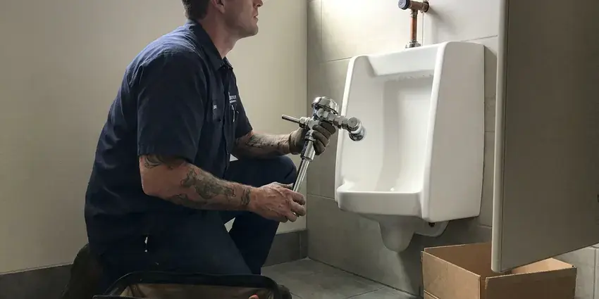

Toilet Bowl Replacement in Lehi, UT
From hairline cracks to badly stained porcelain, we replace toilet bowls in Lehi, UT promptly and protect your floors from water damage.
- Upfront Pricing
- Fast, Local Plumbers
- Quality Parts
- Floor Damage Checked

Ready for a New Toilet Bowl in Lehi, UT?
Don't let a faulty toilet disrupt your home, contact us today for a quick and clean installation.
Your Go-To for Toilet Bowl Replacement in Lehi, UT
BPK Plumbing replaces cracked, chipped and permanently stained toilet bowls while keeping your existing tank when it is in good shape. We identify the model, source a matching bowl and reinstall the tank with new bolts and a new tank-to-bowl gasket. It is a smart fix when you like your toilet and only the bowl has failed.
Our expertise includes:
- Precise installation of new, water-efficient models.
- Expert removal of old, damaged toilet bowls.
- Proper bowl seating and leveling

Additional Bathroom Plumbing Services in Lehi, UT
From toilets to showers, our bathroom plumbing team in Lehi, UT repairs, installs, and replaces every fixture with clean, code-compliant work.


Customers
Why Choose BPK Plumbing for Toilet Bowl Replacement in Lehi, UT?
Choosing the right plumber for toilet bowl replacement makes a big difference in long-term performance and avoiding leaks. We focus on durable solutions that stand up to daily use.
- Transparent Pricing, We provide clear, upfront estimates for all toilet bowl replacement jobs, so you know the cost before any work begins, with no hidden fees.
- Model Matching, We confirm the bowl fits your tank, rough-in and bolt pattern before we order.
- Quality Products, We partner with reputable manufacturers to offer a selection of durable, water-efficient toilet bowls that save you money on utility bills and last longer.
Citywide Coverage
Our service area covers all of Lehi, and we stock common bowls from major brands. That speeds up bowl replacements so your bathroom is not out of service for long.
Experienced Team
We have replaced bowls cracked by dropped tank lids, overtightened bolts and freezing temperatures. Our team knows how to remove a cracked bowl without spilling water or getting cut.
Safety-First Approach
When replacing a toilet bowl, we prioritize the safety of your home and our technicians. Our careful process minimizes water damage risk and makes sure all connections are secure, meeting or exceeding local plumbing standards for Lehi.
Trusted Certified Lehi Plumbing Services Professionals
At BPK Plumbing, we take pride in providing licensed, certified plumbing services throughout Lehi, UT. Backed by recognized industry credentials, our experienced plumbers combine technical skill with genuine customer care. Whether it is repair, installation, or maintenance, we follow strict safety and quality standards to deliver lasting results you can trust.
Call Us Now PHCC Plumbing Contractor Recognition
PHCC Plumbing Contractor Recognition Better Business Bureau (BBB) Accreditation
Better Business Bureau (BBB) Accreditation Angi Certified Pro
Angi Certified Pro ISO 9001 Quality Management Certification
ISO 9001 Quality Management CertificationDependable Toilet Bowl Replacement Services in Lehi, UT
Flange Repair During Bowl Replacement in Lehi, UT
The toilet flange is a critical component that secures the toilet to the floor and connects it to the drain pipe. During a toilet bowl replacement in Lehi, UT, we always inspect the flange for damage, corrosion, or improper installation. A faulty flange can cause rocking toilets and ongoing leaks. If repairs are needed, we address them before installing the new bowl, ensuring a stable and leak-free foundation for your new fixture.

Brand-Specific Bowl Replacement in Lehi, UT
Kohler, American Standard, TOTO, Gerber and Mansfield all sell bowls and tanks separately for many two-piece models. We use the model number stamped inside the tank or under the lid to find the right match. Some combinations are discontinued, and in those cases we find a compatible option or recommend a full replacement. We order parts quickly from local suppliers.
Commercial Toilet Bowl Replacement in Lehi
BPK Plumbing provides dependable commercial toilet bowl replacement services for businesses in Lehi. From high-traffic public restrooms to office facilities, we install durable, ADA-compliant, and high-performance commercial-grade toilets. We understand the need for minimal disruption and prompt service, ensuring your business operations continue smoothly during the replacement process.
Bowl Replacement Versus Full Toilet Replacement in Lehi, UT
A bowl alone can cost $100 to $350 depending on brand, while a complete new toilet starts around $200 for a basic model. If your tank is older or the model is outdated, a full replacement usually makes more sense. If your tank is newer and in good shape, a bowl swap preserves your investment. We compare both options before you choose.
Toilet Bowl Replacement for Remodels in Lehi
When remodeling your bathroom, a new toilet bowl is often a key component. We work with homeowners and contractors in Lehi to fit new toilet bowls neatly into your updated design. Whether you're looking for a specific style, color, or a comfort-height model, we handle the careful installation, ensuring proper rough-in measurements and secure mounting for a polished finish.
Brands We Replace: American Standard, Kohler, Toto in Lehi
Our plumbers are experienced in replacing toilet bowls from all major brands, including American Standard, Kohler, Toto, Delta, and more. We can guide you through the features and benefits of various models, from standard two-piece toilets to wall-mounted and one-piece designs, helping you choose the best fit for your Lehi home's needs and budget. We make sure of proper fit and function regardless of the brand.
Emergency Toilet Bowl Replacement in Lehi, UT
A badly cracked or overflowing toilet bowl can constitute an emergency, requiring immediate attention to prevent extensive water damage. BPK Plumbing offers emergency toilet bowl replacement services in Lehi, UT. We respond quickly to limit damage, safely remove the compromised fixture, and install a new toilet to restore functionality and peace of mind.

Toilet Bowl Replacement for Older Homes in Lehi, UT
Older homes in Lehi, UT sometimes have unique plumbing configurations or cast iron drain pipes that require careful handling during a toilet bowl replacement. Our team has extensive experience working with older plumbing systems. We take precautions to avoid damaging existing pipes and make sure the new toilet bowl fits cleanly with your home's older infrastructure. We can also recommend any necessary minor upgrades to support long-term reliability.
Toilet Bowl Replacement Near Me in Lehi, UT
We pride ourselves on being the trusted local experts for toilet bowl replacement throughout Lehi. Our commitment to the community means we're always just a call away, ready to deliver dependable and lasting plumbing solutions right to your doorstep.
Our plumbers are local to Lehi and familiar with the fixtures common in area homes. We protect your bathroom, work cleanly and test carefully. Every bowl replacement is backed by our workmanship guarantee.
BPK Plumbing at a Glance
- Licensed and insured plumbers serving Lehi, UT
- 24/7 emergency service with same-day scheduling
- Upfront, flat-rate pricing before work begins
- 4.8-star rated by 470+ Utah customers
Lehi Map
Lehi Information
- Population
- 90,227
- Area codes
- 801/385/435
- Service area
- Lehi and communities within 40 miles
- Nearby
- Saratoga Springs, Draper, Herriman, Eagle Mountain
Water softeners are a common fixture in Utah homes, and many newer houses are built with a softener loop already in place. A durable and properly installed toilet bowl in Lehi, UT helps prevent leaks and resist mineral staining, protecting your floors and keeping your bathroom clean.
Expert Services
Trust our professionals for reliable BPK Plumbing solutions in Lehi, UT.
Our Specialized Plumbing Services in Lehi, UT
At BPK Plumbing, we provide a complete range of plumbing services across Lehi, UT. From leak detection to full system installations, our team ensures fast, precise, and affordable service for both residential and commercial properties. Explore our core services below:


How Our Toilet Bowl Replacement Process Works in Lehi, UT
Our toilet bowl replacement process in Lehi, UT is designed to be straightforward and stress-free for you.
Request a Quote
Contact BPK Plumbing at (385) 543-4073 to describe your toilet bowl issue and schedule an appointment. We'll gather the needed details to prepare for your service call.
On-Site Assessment
Our plumber will arrive at your Lehi home to inspect the damaged toilet bowl and assess the plumbing. We'll confirm the issue and discuss replacement options and pricing.
Professional Installation
We carefully remove the old bowl, inspect the flange, and install your new toilet bowl with care. This includes new wax rings, bolts, and water supply lines for a leak-free setup.
Frequently Asked Questions About Toilet Bowl Replacement in Lehi
The cost of toilet bowl replacement in Lehi, UT usually ranges from $400 to $800, depending on the toilet model, any necessary flange repairs, and labor. This includes removal and disposal of the old toilet. We provide a clear quote upfront.
If the leak is from a minor component like a flapper or fill valve, repair is often sufficient. However, if the toilet bowl itself is cracked, replacement is the only safe and effective solution to prevent water damage.
Common causes include overtightened floor or tank bolts, heavy impacts, uneven floors that stress the porcelain and freezing in unheated buildings. Age and manufacturing flaws can also contribute.
A wax ring is a crucial seal located at the base of your toilet bowl, creating a watertight barrier between the toilet and the drain pipe. It prevents water from leaking onto your floor every time you flush. When replacing a toilet bowl, installing a new wax ring is essential for a leak-free and odor-free installation.
With the matching bowl on hand, the job typically takes 1 to 2 hours. If the bowl must be ordered, it may take a few days to arrive.
In many cases, if only the bowl is damaged, such as with a crack, we can replace just the toilet bowl itself, assuming a compatible tank is available and in good condition. However, if the tank is also damaged, or if you're looking for an upgrade in efficiency or style, a full toilet replacement might be a more sensible option.
Water softeners are a common fixture in Utah homes, and many newer houses are built with a softener loop already in place. Hard water can lead to mineral buildup and staining inside your toilet bowl, making it hard to clean and potentially shortening the lifespan of internal components. Regular cleaning and water softeners can help reduce these effects.
BPK Plumbing stands behind all our toilet bowl replacement services with a comprehensive warranty on both parts and labor. We want you to be confident in the quality and longevity of our work.
What People Are Saying About Our Plumbing Experts?

Robert G.
The trenchless sewer replacement saved our front yard. They walked us through the camera inspection footage first so we knew exactly what we were paying for.
Sewer Line Replacement · South Jordan, UT
Mark T.
When our office needed drain cleaning, BPK Plumbing provided quick, reliable service. The plumber arrived on time and made sure every drain flowed perfectly before leaving. Very satisfied.
Drain Cleaning · Eagle Mountain, UT
Daniel K.
A pipe burst at 11 pm and they actually answered. The plumber showed up within the hour, shut everything down, and had us back to normal the next morning. Could not ask for more.
Emergency Plumbing · Draper, UT
Sofia M.
Two new toilets installed in one visit, no mess left behind, and the tech even adjusted a faucet he noticed was dripping. Fair pricing and really friendly.
Toilet Installation · South Jordan, UTLaura S.
I scheduled a water heater replacement, and the team made the process smooth and affordable. The new unit works perfectly, and they cleaned up after completing the job.
Water Heater Replacement · Herriman, UT
Emily R.
I called BPK Plumbing for plumbing repair, and the technician was fast, polite, and thorough. They explained the problem clearly and fixed it the same day. I will definitely hire them again. Highly recommended!
Plumbing Repair · Lehi, UT